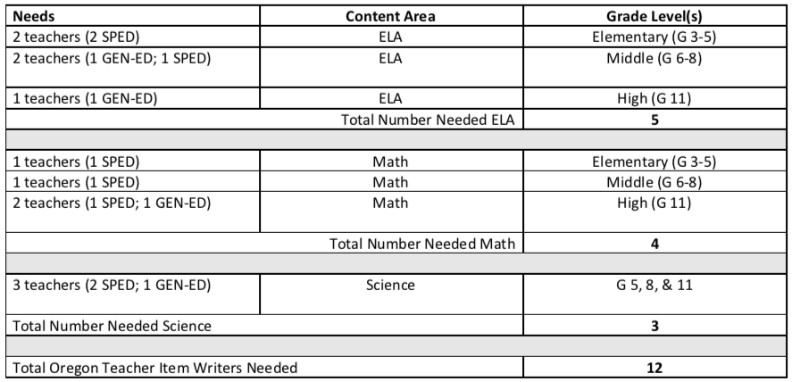
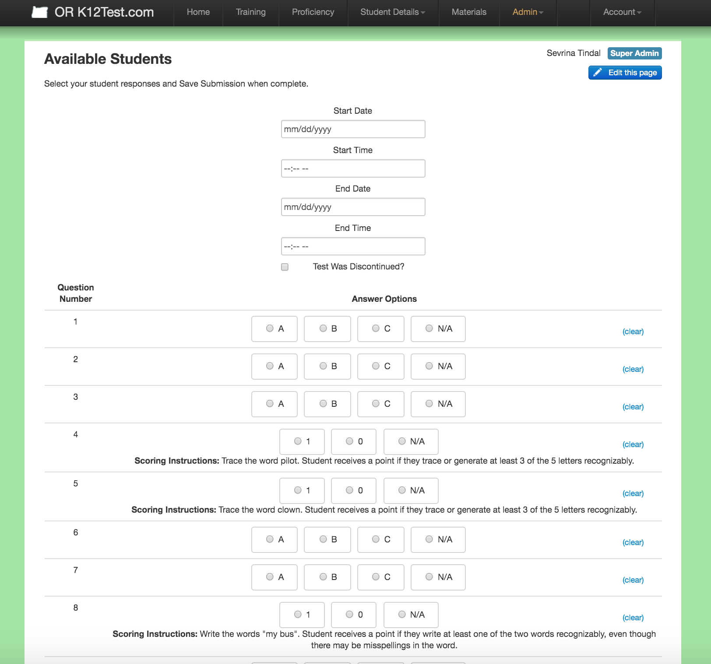

2 Assessment Operations
2.1 2.1 Test Design and Development
The test specifications document that describes our approach to assessment and test design for the ORExt is published in Appendix 2.1. The document includes our approach to reducing the depth, breadth, and complexity (RDBC) of grade level content standards, an overview of the essentialization process and EAF documents, the planned test design for the ORExt, test development considerations, sample test items, item specifications, and universal tools/designated supports/accommodations. Only Grade 7 Math field test items were developed in 2017-18 which were in accordance with the 2014-15 test specifications, and are the most current available.
2.1.1 2.1A ORExt Purpose
The stated purpose of the ORExt is to provide the state technically adequate student performance data to ascertain proficiency on grade level state content standards for students with significant cognitive disabilities. A long-term goal of the program is to also provide information regarding annual student growth related to these content standards over Grades 3-8, as measured by vertically scaled assessments in ELA and Mathematics. The results of the assessment are currently reported in comparison to four performance levels: Level 1, Level 2, Level 3, and Level 4. Levels 3 and 4 denote a proficient level of performance, while Levels 1 and 2 denote performance that is not proficient. BRT and ODE developed a scaled score interpretation guide to assist stakeholders in interpreting the meaning of the scaled scores generated by the ORExt, supported by the state’s achievement level descriptors. This guidance is published in Appendix 2.1A.
2.1.2 2.1B ORExt Test Blueprint
Appendix 2.1B includes the entire test blueprint for the ORExt, as conveyed by the balance of representation across content areas and domains. Field-testing is conducted each year in order to support the continuous improvement of test functioning. However, items are selected to maintain this balance of representation. Oregon teachers validated the content of the assessment, agreeing with the standards that were and were not selected to develop the Essentialized Standards to which the ORExt test items are aligned.
2.1.3 2.1C Test Development Processes
The test development process implemented for the ORExt is conveyed in Appendix 2.1C, including standard selection and validation, item development, item review, review of all Oregon teacher feedback and updating of items, and scaling and item selection. The Appendix articulates the process used to generate the materials with comma separated value files used to create item templates that fed into Adobe InDesign© through a data merge. Final test packages are reviewed for accuracy and content and then disseminated via secure file transfer to Oregon Qualified Assessors.
2.1.4 2.1D Computer-Adaptive Considerations
The ORExt is not a computer-adaptive instrument, so these concerns do not apply.
2.2 2.2 Item Development
Item writers were recruited by ODE staff using an existing Qualified Assessor/Qualified Trainer listserv.

2.2.1 Project Description:
Behavioral Research and Teaching at the University of Oregon recruited Oregon teachers to participate in item development for a new alternate assessment. Selected teachers were asked to develop 360 items in English Language Arts, Mathematics, or Science over the course of the summer, from mid-June through end of August. The Project Director worked with lead item developers to provide training, ongoing review and feedback, and quality assurance. All participants were expected to provide documentation of their qualifications and sign test security agreements. In addition, all item developers were expected to participate in a half-day item development training based upon the following schedule: ELA - Tuesday, from 8 AM to 12 PM; Math - Wednesday, from 8 AM to 12 PM; Science - Thursday, from 8 AM to 12 PM.
2.2.2 Minimum Qualifications:
All licensed Oregon public school teachers with at least three years of teaching in a life skills/severe needs program (SPED) or a general education classroom (GEN-ED), respectively, were encouraged to apply. Preference was given for item writing experience, additional years of teaching experience, and higher education degree status.
2.2.3 Compensation:
Teachers who participated in this process were compensated at a rate of $20/hr via professional service contracts. It was anticipated that teachers would produce 4 ELA items/hr, 6 Science items/hr, and 8 Math items/hr. As such, the maximum contract amount for ELA was $1,800, for Science $1,440, and for Math $900. Item development focused primarily on writing the stem and 3 options, with no need to produce graphics (rather use labels for a BRT graphic designer to produce).
2.2.4 Contact:
Because the timeline required work over the summer, Oregon teacher recruitment was challenging. BRT researchers thus performed an additional on-campus recruitment within the College of Education using the same information. The final pool of item writers included 18 item writers: seven Oregon teachers (all with MA degrees), five PhD candidates within the COE, and six BRT researchers (four PhD candidates, one PhD, and one with an MA). Item writers averaged 11.5 years of teaching experience. The teachers recruited all had prior experience developing items for the ORExt, as did all of the BRT researchers. The five PhD candidates within the COE had no prior item development experience. All item development was reviewed by BRT researchers and the Project Manager.
The item development process followed is elaborated in Appendix 2.2.1, which is the PowerPoint used in training all Oregon item writers. The item development process was structured with the following steps. Item writers were first oriented to the student population, as the pool of item writers included both content and special education experts. The Essentialization Process used to RDBC grade level standards was then modeled so writers would understand how the item alignment targets, the Essentialized Standards, were generated. Lecture, guided practice, and independent practice activities and follow-up discussion ensured comprehension of the process. BRT staff developed exemplar items for every Essentialized Standard, varying the complexity from Low (L) to Medium (M) to High (H) levels of complexity to convey the different performance expectations at each level. The balanced vertical scaling design provided an overall form-to-form and grade-to-grade level framework for the test formation process once items were developed (see Appendix 2.2.2). Sample items are provided in Appendix 2.2.3 for stakeholder reference, demonstrating the format and style of typical items on the ORExt.
2.3 2.3 Test Administration
The ORExt assessments are administered according to the administration, scoring, analysis, and reporting criteria established in the ORExt General Administration Manual (see Appendix 2.3). Important updates to the testing process are distributed via the Assessment and Accountability Updates listserve, as well. ODE uses this system to communicate information that is relevant for the statewide assessment system, including the ORExt. Announcements are sent to the listserv by email and are also posted to the ODE website. The standardization of test administration is supported by a comprehensive training process described below in Section 2.3B.
2.3.1 2.3A Administration and Accommodations
The state has ensured that appropriate universal tools, designated supports, and accommodations are available to students with disabilities and students covered by Section 504 by providing guidance and technical support on accommodations (see Appendices 2.3A.1 and 2.3A.2). Guidelines regarding use of the accommodations for instructional purposes are included in the document, as all students are expected to receive test accommodations that are consistent with instructional accommodations.
Accommodations are built into the flexibility provided by the ORExt test though they have not yet been researched for the ORExt. However, annual training and proficiency testing efforts related to becoming a qualified assessor and/or qualified trainer for the ORExt support standardized use of available accommodations that are not already part of the test design. Based on annual analyses, results demonstrate that student performance varies according to their abilities and not construct-irrelevant factors, such as sex, race, or ethnicity (See Section 4.2).
The state has ensured that appropriate accommodations are available to students with limited English proficiency by providing guidance and technical support on accommodations (see Appendix 2.3A.1). Communication systems for this student population are limited; exposure to multiple languages can make a student’s communication system more complex. The ORExt uses universal design principles and simplified language approaches in order to increase language access to test content for all students. In addition, directions and prompts may be translated/interpreted for students in their native language.
An analysis of accommodated versus non-accommodated administrations is needed in order to demonstrate that the provision of language accommodations is not providing any advantage to students with limited English proficiency, nor any disadvantage to other participants. Accommodations information was collected this year as an option for data entry. Entering accommodations information will be required each year. Analyses of the impact of accommodation provision on the ORExt is feasible after each years administration.
The Oregon Extended assessments can be administered using both Large Print and Braille (contracted and non-contracted) versions, as well. Oregon has ensured that the Oregon Extended assessments provide an appropriate variety of accommodations for students with disabilities. The state has provided guidance on accommodations in presentation, response, setting, and timing in the Accessibility Manual 2021-22: How to Select, Administer, and Evaluate Accommodations for Oregon’s Statewide Assessments (see Appendix 2.3A.2). The Oregon Extended assessments are also designed according to universal design principles and utilize a simplified language approach (see Appendix 2.3A.3).
In the 2021-2022 school year, the state redesigned a training and proficiency program for sign language interpretation of its assessments and has significantly updated the site during this time. The sign language training process included videos of interpreters administering items to students, materials that support appropriate administration (i.e., transcripts, closed captioning and PowerPoint slides that supplement the video administrations and the current ODE accessibility manual), and proficiency testing to support standardized interpretation for Oregon’s assessments, including the ORExt. A 10-item proficiency test was administered, with an 80% required for passing (8/10 items correct). In 2021-22, the site was used to train 48 participants. All participants passed the assessment on the first attempt. The overall average score on the proficiency test was 95.9%.
The ORExt assessments provide an appropriate variety of linguistic accommodations for students with limited English proficiency. They also use a simplified language approach in test development in order to reduce language load of all items systematically (see Appendix 2.3A3). Any given student’s communication system may include home signs, school signs, English words, and Spanish words, for example. With the exception of items that require independent reading, the ORExt assessment can be translated or interpreted by a Qualified Assessor (QA) working with an interpreter in the student’s native language, including American Sign Language. QAs are allowed to translate/interpret the test directions. QAs can adapt the assessment to meet the needs of the student, while still maintaining standardization due to systematic prompts and well-defined answers.
2.3.2 2.3B Comprehensive Training System
Comprehensive information for ongoing training for all qualified assessors (QAs) and Qualified Trainers (QTs) is provided in Appendices 2.3B.1-2.3B.8. Through an online distribution and assessment system, QA/QT Training and Proficiency is determined anually. This website hosts all resources and information needed to administer, score, report, and interpret the results from the ORExt. The website also includes proficiency assessments that are required for all QAs and QTs who may administer the ORExt. QTs are directly trained by ODE and BRT staff as part of a train the trainers model. QTs then provide direct trainings for new QAs in their respective regions.
The Oregon Department of Education (ODE) provided four direct statewide trainings for new Qualified Trainers (QTs) and returning QTs in Zoom regional trainings. The the regional trainings were provided at two separate time slots on November 10th and November 17 for a total of four QT training opportunities.
Only trained Qualified Assessors (QAs) can administer the Oregon Extended assessment. Qualified Assessors who also receive direct instruction from ODE and BRT may become Qualified Trainers (QTs) who are certified to train local staff using the train-the-trainers model. Training for new assessors must be completed on an annual basis. Assessors who do not maintain their respective certifications for any given year must re-train if they choose to enter the system again.
The tables below contain data from the Oregon Extended Assessment Training and Proficiency Website. All assessors need to complete some form of training each year to retain their status for administering the Extended Assessments.
New assessors and returning assessors needed further training in 2021-22 and were required to pass proficiencies with a score of 80% or higher. These proficiencies covered areas in Administration, English Language Arts (ELA), Mathematics, and Science. Returning QAs or QTs for the 2021-22 school year only needed to pass a Refresher Proficiency, again with a score of 80% or higher. The tables below contain data on the number of assessors (participants) in each of the proficiencies, as well as the Refresher Proficiency. Included in the data is the number of attempts needed to attain a passing score as well as the average passing score of the participants.
An analysis of the Oregon Extended Assessment Training and Proficiency Website showed #? Assessors in-Training, #? Qualified Assessors, and #? Qualified Trainers registered with the system.

A higher number of assessors completed the Refresher Proficiency test than the subject area proficiency tests reflecting a greater number of return assessors compared to new assessors. Data showed ELA Proficiency to be the most challenging to new assessors, but most were able to pass on the first or second attempt with about 1% or less of assessors requiring more than two attempts and science to be the least challenging with 100% of assessors passing on the first attempt. The majority of assessors passed the Administration and Math proficiency tests on the first and second attempts with less than 1% requiring a third attempt. The majority of returning assessors passed the refresher on the first attempt with less than 2% requiring a seond and third attempt. There were 12 fewer Qualified Assessors and 2 more Qualified Trainers compared to last year.
Evaluations are collected at each QT training in November. The results reflect general approval, but also suggest areas of improvement that ODE and BRT work on for subsequent trainings/subsequent years, as appropriate. QT evaluations this year included positively worded statements regarding the quality of training rated on a scale where 1 = Strongly Disagree, 2 = Disagree, 3 = Agree, and 4 = Strongly Agree.
The first section evaluated the state-level information and the knowledge of the ODE presenters, the participants’ level of comfort with the training provided, the participants’ ability to carry this training and materials back to train district staff, and the overall utility of the training. Seventy-six percent of participants strongly agreed with these statements, 24% agreed, and less than 3% disagreed and strongly disagreed, collectively. In the second section, participants were asked to evaluate the BRT trainers and their guidelines regarding how to use the training and proficiency website and related resources. Seventy-nine percent of participants strongly agreed with these statements, 19% agreed, and less than 2% disagreed and strongly disagreed, collectively. Overall, these results demonstrate that participants felt that the training was high quality and they felt confident that they could train their staff upon return to their respective districts with the knowledge and resources gained. This year’s QT training cycle included an optional afternoon session for any interested educators on how to essentialize grade level content standards and how to develop curriculum and provide instruction that is aligned to those standards for students who are functioning off grade level, with a focus on students with significant cognitive disabilities (SWSCD). We asked participants to rate their confidence in using the knowledge acquired during the session as well as to evaluate the quality of the presentation and materials. A four-point scale was employed (Strongly Disagree, Disagree, Agree, Strongly Agree). Percentages of responses for each statement used in the survey are provided below. The table provides a summary of the data related to participant confidence and their evaluation of the quality of the presentation. The respondent n-sizes ranged from 26-30, depending upon the question.
Note: Results are very positive, with some reviewers feeling less confident about their abilities to train others about the essentialization process. This outcome was expected. The process is complex, particularly given the understanding that this was the first time they had received such training.

In addition, all technical assistance questions that we receive from the field as part of our HelpDesk are documented. The most common inquiries for the 2018-19 test administration window involved credential verification to add schools/students to rosters, selecting appropriate IDEA disability codes for rosters, and manual grading for the electronic ELA writing items. Some other common inquiries included exit PIN, access to monitoring for DTC’s, and technical issues with individual tablet. All helpdesk inquiries will be taken into consideration as the training site is updated for the 2019-2020 testing year.
The HelpDesk log is published in Appendix 2.3B.9.
Oregon monitors the quality of its system in several ways in order to support continuous improvement. In terms of the assessment quality, item statistics are reviewed each year and items that are not functioning as intended are removed and replaced by better functioning field-test items.
In 2014-15, items were reviewed in two phases, first using classical test theory (CTT) and second using Rasch analyses. All items flagged as a result of the statistical reviews were analyzed, item-by-item, by a team of measurement and content experts at BRT. Not all flagged items were removed, as several did not have apparent design flaws. Considerations regarding domain representation as well as item difficulty range also were considered during the review process. We also employed different decision rules for unique items versus horizontally- or vertically-scaled anchor items. It was important in many cases to maintain anchor items. Items with clear design flaws were removed from subsequent analyses and reporting. The following flagging criteria were employed:
- CTT: A unique item was flagged if it had a p-value of .10 or lower, .90 or higher, or a point biserial < .15. Anchor items were flagged if they had a p-value of .10 or lower or .95 and higher on all forms or a point biserial < .45 on any form.
- Rasch: Unique items were flagged if their outfit mean square values were between 0 and .25 or > 1.5. Anchor items were flagged if their outfit mean square values were < .5, > 1.8 for horizontal items, or > 2.0 for vertical anchor items.
Out of a total of 5,929 items developed in 2014-15, 166 were removed (2.8%).
We also implement a consequential validity study each year that surveys QAs and QTs regarding the academic and social consequences of the ORExt, both intended and unintended. The Consequential Validity report is published in Appendix 2.3B.10. ODE and BRT staff review the results of the survey annually to determine what program improvements are needed. A summary of the results is provided below.
ODE implemented a research survey program to address the need to document the consequences, both intended and unintended, of the ORExt Assessments. The research questions have been framed based upon current consequential validity approaches for alternate assessments in the literature, as well as issues that are of specific value in Oregon. The survey included 121 respondents. This was 11% of the solicited respondents, who were all Qualified Assessors (QAs) and Qualified Trainers (QTs) in the or.k12test.com database. The sample was 83% female and represented all regions of the state, as well as age ranges. The survey included a range of quantitative and qualitative components. The quantitative results demonstrate that QAs and QTs continue to feel that the ORExt test items were easy to administer and score (64.2% Strongly Agree) and felt confident in their ability to interpret scaled scores and Achievement Level Descriptors for the ORExt (69.8% Strongly Agree and Agree). They also felt that the items were accessible for students who participated (78% Strongly Agree and Agree) and that the ORExt reflected the academic content that SWSCD should be learning (68.4% Strongly Agree and Agree). QAs and QTs felt marginally positive about the educational impacts of the ORExt and marginally negative about its social impacts. The results again demonstrate that the ORExt content area assessments generally require up to one hour to administer.
The qualitative results revealed two areas in which educators appreciated the ORExt and four areas of needed improvement. QAs and QTs said that they appreciated: 1) the assessment’s efficiency (i.e., more streamlined administration, ease of administration, easier to give and score online, online materials distribution); and, 2) overall item and test design (i.e., one item per page, visual supports, scoring protocol and student materials design, accessibility of test questions). Teachers recommended the following areas of improvement, not all of which are actionable: 1) Option to administer the assessment electronically, 2) A functional skills assessment, 3) New items for very low functioning students should be developed, and 4) A math assessment composed of more practical/life skills problems involving time and money. Complete results, including anticipated responses, from the survey can be found in Appendix 2.3B.10.
2.3.3 2.3C Technology-based Assessments
The ORExt was implemented using a technology-based platform as Phase 3 of the ORExt Tablet Administration. The 2017-18 testing window was the first year all grade level and subject area assessments were available on a tablet application/web-based platform. Administration of the tablet application mirrors paper/pencil administration with each item read aloud to the student, and the student asked to select one of three answer choices. Tablet functionality includes optional discontinuation if the student misses 10 out of the first 15 items, directing the assessor to administer the ORora. To support understanding of the system by both teachers and students, a separate practice test tablet application is available. Helpdesk inquiries and feedback from the field indicated much preference of the tablet administration versus paper/pencil. Qualified Trainers and Qualified Assessors reported their students’ were more focused during tablet administration, and because the tablet application scores automatically it was much more efficient for assessors. Improvements will be made to the electronic test based on technology improvements and feedback from the field. Data entry for all platforms is now maintained and monitored by secure BRT servers.
2.4 2.4 Monitoring Test Administration
The ODE maintains a rigorous training system to support standardized test administration for the [Oregon K12 website](https://or.k12test.com, (secure website, but see screenshot below for an example of training content).

The or.k12test.com website includes a training section that addresses any systems updates, the process for becoming a Qualified Assessor or Qualified Trainer, student eligibility expectations, student confidentiality and test security, test administration and scoring expectations, examples of appropriate and inappropriate administration (video), supporting student access to items without violating the test construct, content area trainings that demonstrate how to administer items in ELA, Math, and Science (video, with supporting test materials), and how to access secure tests and complete data entry. Information for QAs, QTs, and parents regarding the ORExt is also provided, as are all necessary support materials. For QAs, these materials include practice tests to prepare both themselves and students for the annual assessment and all of the training materials used on the website. In addition to these materials, QTs have access to all training materials necessary to provide annual training to QAs in their purview (see screenshot below):

In addition, monitoring and reporting related to test administration issues for the ORExt is addressed via general ODE reporting systems. Information regarding this process can be located in the general assessment system Peer Review evidence submission.
2.5 2.5 Test Security
2.5.1 2.5A Prevention of Assessment Irregularities
Test security policies and consequences for violation are addressed in the Test Administration Manual on an annual basis (see Appendix 1.4.2, p. 29-33). These policies include test material security, proper test preparation guidelines and administration procedures, consequences for confirmed violations of test security, and annual training requirements at the district and school levels for all individuals involved in test administration. Consequences for adult-initiated test irregularities may be severe, including placing teaching licenses in jeopardy (see Appendix 1.4.2, p. 31-33).
2.5.2 2.5B Detection of Test Irregularities
The ODE utilizes a localized monitoring system where school test coordinators oversee building-level administration by trained, Qualified Assessors, and report to centralized district test coordinators, who are then responsible for reporting any confirmed violations to ODE. Improprieties are defined as adult-initiated or student-initiated and investigated accordingly (see Appendix 1.4.2, p. 29-31).
2.5.3 2.5C Remediation Following Test Security Incidents
ODE’s alternate assessment program manager investigates and remediates substantiated test security incidents for the ORExt by working with district test coordinators. Additional information regarding this process can be located in the general assessment system Peer Review evidence submission.
2.5.4 2.5D Investigation of Test Irregularities
School and district test coordinators conduct initial investigations into all alleged test irregularities. Once reported to ODE, all alleged test irregularities are investigated in consultation with district test coordinators and the test vendor, as appropriate (see Appendix 1.4.2, p. 31-33). In the event that a test irregularity is determined to be factual, consequences are determined based upon contextual issues that are brought to light during the investigation. Additional information regarding this process can be located in the general assessment system Peer Review evidence submission.
2.6 2.6 Systems for Protecting Data Integrity and Privacy
2.6.1 2.6A Integrity of Test Materials
Test materials for the ORExt are maintained throughout development, dissemination, and administration via multiple mechanisms. All items under development are stored in secure file servers managed by Behavioral Research & Teaching at the University of Oregon, the test vendor for the ORExt. Item reviews necessary to provide alignment, bias, and sensitivity information are conducted online using the secure Distributed Item Review (DIR) platform (secure website, but see Appendix 3.1B for a system overview).
For the 2018-2019 school year, all paper/pencil secure test distribution and data entry was hosted by BRT through the secure training site.
The secure tablet application and web-based platform distribution and data entry were hosted by BRT servers. All technology based secure administration and data entry was password-protected. Download of the tablet app was dependent on the type of device, all instructions and download links were available in the Test App User Guide (see Appendix 2.6A) Additional information regarding test security can be located in the general assessment system Peer Review evidence submission.

2.6.2 2.6B Secure Student-Level Assessment Data
Student level datais protected by relevant training and through a secure data system in which all data entry is conducted online using password-protected, secure procedures on the Oregon K12 website Only trained users with a vested educational interest who have signed test security agreements are authorized to access to online data entry systems.
2.6.3 2.6C Protecting Personally Identifiable Information
All confidential, personally identifiable student information is protected by policy and supported by training (see Appendix 1.4.2, p. 26). The minimum number of students necessary to allow reporting of students and student subgroups varies by rating (i.e., achievement, growth, graduation, and school size), by level (i.e., school/district/state), and by number of years of assessment data available. For example, to receive an achievement rating, schools must have at least 40 tests for the two most recent school years in reading or mathematics. Alternatively, small schools receive an achievement rating if they have at least 40 tests over the most recent four years. If a school does not have at least 40 tests over a four-year period, they will not receive an achievement score (see Appendix 2.6C). Similar rules are applied to student subgroups, including students with disabilities, English learners, and students from diverse racial/ethnic backgrounds (see Appendix 2.6C, p. 7).